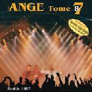

| Artist: | Ange |
| Title: | Tome 87 |
| Label: | Musea FGBG 4444.AR |
| Length(s): | 58 minutes |
| Year(s) of release: | 2002 |
| Month of review: | [05/2002] |
| 1) | Le Chien, La Poubelle Et La Rose (Theme Final) | 1.14 |
| 2) | Aujourd'hui C'Est La Fete | 3.16 |
| 3) | Exode | 4.21 |
| 4) | Les Longues Nuits D'Isaac | 4.03 |
| 5) | Ode A Emile | 3.28 |
| 6) | Sur La Trace Des Fees | 4.45 |
| 7) | Le Nain De Stanislas | 5.47 |
| 8) | Fils De Lumiere | 4.27 |
| 9) | Le Cimetiere Des Arlequins | 11.25 |
| 10) | Tout Feu Tout Flamme | 4.38 |
| 11) | Hymne A La Vie | 10.20 |
Exode takes the pressure back a bit, only to be followed by the sharp guitar of Les Longues Nuits d'Isaac, giving way to slow vocals building up towards typical Decamps fervor. This track shows a nice interchange of slower parts that are most atmospherical and Decamps forceful delivery, carried al the way by the other instruments.
Ode A Emile starts with an acoustic guitar, gradually picking up strength and moving towards its mid stage climax, and then winding down again.
In Sur La Trace Des Fees Decamps seems to almost hold himself back, trying to prevent premature erm... well getting overheated, anyway.
According to the bio Le Nain De Stanislas wasn't released live before. I'm afraid I wasn't really aware of that, but with its odd, almost clownish start and brilliant closing section this is definitely a track you can't go around. Despite missing the choir in this track, it's still pretty near its brilliant old self, especially since the live performance adds intensity.
Fils De Lumiere creates a climax not as much centered around Decamps voice, but with keys and guitars, closed out by a drum solo.
Le Cimeteriere Des Arlequins features a long spoken introduction, sort of like the Genesis stories in the seventies, but then in French. The slow bass creates the opening for keys and Decamps constricted voice, building towards more. Like before gaining speed, into an almost cacophonic ending, overtaking the original album.
Tout Feu Tout Flamme is the latter day track of this album, although still sort of okay at it, followed by Hymne A La Vie, released at the end of the good period. These aren't the best tracks to close out an album with.